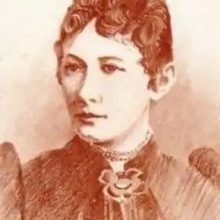
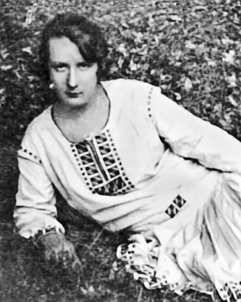
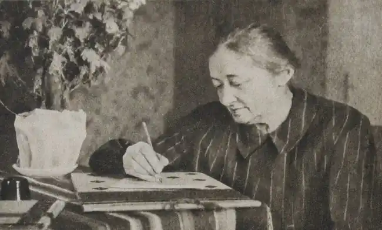

Схилившись над бюрком, вісімнадцятилітня семінаристка Юлія Шнайдер хапливо гортає сторінки журналу "Дзвін". Казали, що тут надруковано Франкового вірша "Каменярі", їй дали цей журнал ще в семінарії, але хіба ж там прочитаєш, коли на тебе чигає на кожному кроці пильне око "вірнопідданого" цербера-вчителя. Дівчина ще й ще гортає сторінки, та чи від хвилювання, чи від квапливості не може знайти потрібної. А в затишну кімнату вже закрадаються сутінки, і здається, що хтось темний, невідомий став у кутку, позирає на неї злими очима, наче той надзиратель. Аж ось — шукана сторінка. Дівчина впивається в рядки і, мов молитву, шепоче тихенько запалы і слова. Поки не з'явилися родичі, кидається переписувати цю мужню поезію. Як би хотілось їй зустрітися з автором отих дивовижних рядків, розказати йому про свої думки-сумні ви, прочитати власні вірші-тривоги! Та хіба ж це можливо? Дядько категорично заборонив їй зустрічатися з "скомпрометованим" поетом-соціалістом...
Юлія Юліївна Шнайдер, що виступила згодом у літературі під псевдонімом Уляни Кравченко, народилася 18 квітня 1860 року в містечку Миколаєві на Дрогобиччині в сім'ї повітового комісара.
Батько її був людиною монархічних переконань, іноді він друкував свої вірші на політичні теми в газеті "Галицька зоря". Коли Юлії минуло десять літ, батько помер. Вихованням майбутньої письменниці клопоталася її мати. Вона гарно співала українські й польські пісні, чудово оповідала народні легенди. Уже в дитячому віці Юлія полюбила чарівність художнього слова і пісні. Понад десять років родина Шнайдерів мешкала в Миколаєві в будинку письменника Миколи Устияновича. Тут Юля не раз чула його вірші у виконанні одного студента, братового товариша. Звісно, що це сприяло пробудженню її літературного таланту. Вчилася дівчина спершу дома, а потім від 1877 до 1881 року здобувала освіту у Львівській учительській семінарії. Тут вона почала захоплюватися творами Пушкіна, Шіллера, Гете, взялася до вивчення української літературної мови за творами Федьковича, Котляревського, Марка Вовчка. Найбільше враження на неї справили поезії І. Франка, який був на той час визнаним проводирем молодої галицької літератури. Юлія стежить за кожним його новим твором. 18S1 року Юлія Юлії в на закінчила Львівську учительську семінарію і одержала посаду вчительки в селі Бібрці на Львівщині. З великим завзяттям береться вона до вчителювання. Але тупість і байдужість місцевого шкільного начальства, інтриги заздрісних викладачів створювали безліч перешкод на шляху до сумлінного служіння справі виховання дітей. Молода вчителька всі сили віддає школі, працює над своєю самоосвітою, готується до кваліфікаційного екзамену на вчительку середньої школи, однак не мав справжнього душевного задоволення. І вона віддається літературі. Надіслані до львівського журналу "Зоря", твори Уляни Кравченко потрапили на очі Франкові. Переглядаючи рукописи, він помітив вірш "Згадай мене, милий", який йому сподобався. Поет доробив його, і вірш нікому не відомої авторки з'явився в 21-му номері журналу "Зоря" за 1883 рік. І. Франко написав молодій поетесі теплого листа, заохочуючи її до праці на ниві української літератури. З тих пір між ними виникає щире листування, що не припинялося до самісінької смерті Івана Франка. У своїх листах поет рекомендував Уляні Кравченко, які праці вивчати, що читати, яким шляхом іти до здійснення своїх мрій. Він також багато сприяв і допомагав у виданні перших творів письменниці — віршів та оповідань. Саме Франко упорядкував і підготував до друку першу її збірку, що вийшла 1885 року, і видав власним коштом другу. Вчителювання в селі Бібрці закінчилося для У. Кравченко невдало. На офіційних виборах так званої "сталої вчительки" було відзначено її бездоганну працю, але на посаду призначили іншу особу. Того ж 1884 року У. Кравченко розпочала новий навчальний рік у сусідньому з Бібркою селі Стоки. До цього тут не було школи. Сільська громада погодилася доручити її організацію молодій учительці. Долаючи всілякі труднощі, в будівлі без даху, без підлоги й без вікон вона протрималася декілька осінніх і зимових місяців, а далі, завдяки допомозі та клопотанню Франка, перебралася до Львова, де почала викладати в шестикласній українській школі для дівчат. Однак довго вчителювання У. Кравченко у Львові не тривало. Ті звинуватили в прихильності до фонетичного принципу написання українських слів (на противагу офіційно затвердженому етимологічному), в популяризації Франкових ідей і звільнили з роботи. Не маючи засобів на існування, вона виїхала зі Львова восени 1885 року. Деякий час У. Кравченко працює вчителькою в родині одного поміщика в селі Руденки на Львівщині, потім учителює два роки в селі Лужок Долішній на Дрогобиччині, де одружується з місцевим учителем, а з 1888 по 1920 рік з невеликими перервами викладає в школі села Сільці на Дрогобиччині. Незважаючи на нелегке мандрівне життя, молода вчителька багато й плідна працювала в літературі. Після виходу першої збірки "Prima vera" поетеса здобула популярність серед читачів. Вихід у світ її книжки став помітною подією в тогочасному літературному житті. Адже це була перша а Галичині збірна поезій, написана жінкою-українкою, що мовби заявила про рівність жінок у правах з чоловіками. Творчість У. Кравченко пройнята щирою людяністю і співчуттям до гноблених і скривджених. У кращих своїх віршах поетеса підкреслює, що кривди й горе переповнили чашу терпіння народного: не за горами час, коли трудящі виступлять проти одвічних своїх визискувачів. Не раз вона звертається до теми призначення поезії і місця поета в суспільному житті, з тонким ліризмом малює красу рідної природи, інтимні почуття. Близько двадцяти п'яти років У. Кравченко виступала з творами для дітей у журналі "Дзвінок" (1890—1914). її поезії для дітей та юнацтва, позначені ідеями гуманізму, виховували пошану до людей праці, любов до рідної природи. Авторка багато уваги приділяла прищепленню читачам поваги до науки й освіти. У поетичний доробок для дітей і юнацтва ввійшло кілька збірок У. Кравченко — "Проліски" (1921), "В дорогу" (1921), "Лебедина пісня" (1924), "Шелести нам, барвіночку" (1932). Понад сорок років У. Кравченко пропрацювала сільською вчителькою, а 1920 року переїхала до Перемишля, де 1939 року зустріла Радянську Армію — визволительку її рідного народу. Незважаючи на свій вісімдесятилітній вік, вона виступає в радянській пресі з віршами і статтями, проводить громадську роботу. Трудящі Перемишля обирають її своїм депутатом, поетеса стає членом Спілки радянських письменників України. У квітні 1941 року видавництво "Радянський письменник" видало "Вибрані поезії" У. Кравченко. На вісімдесят восьмому році життя, 31 березня 1947 року, У. Кравченко померла в Перемишлі. Там вона й похована.